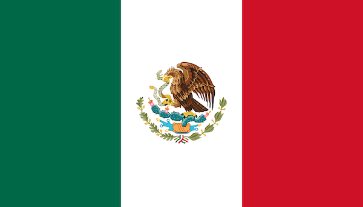
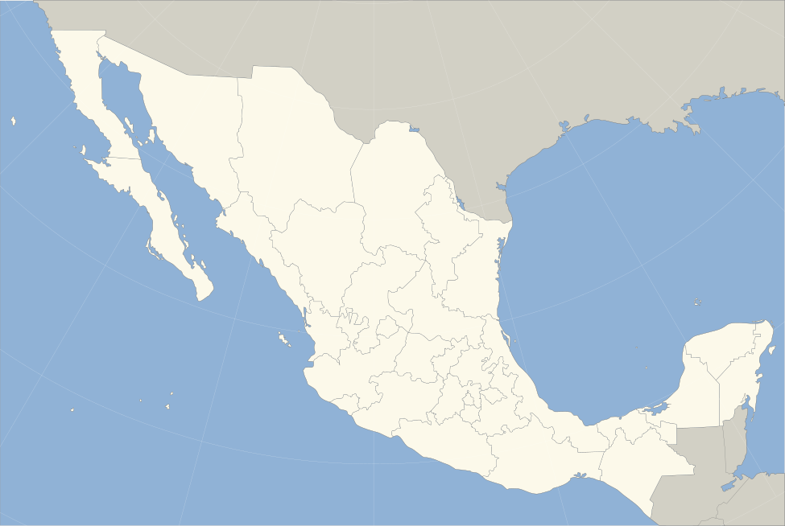

Mexico
BIENVENIDOS A MEXICO!
Mexico is a national territory rich in culture, traditions, and gastronomy, and a history that could leave anyone fascinated. On this page, we will explore more fascinating facts about this beautiful country, acts that will leave you eager to visit and learn more about it.
Mexican flag
The flag of Mexico is one of the most beautiful flags in the world,not only because of its design, but also because of what it represents.
The color green represents the hope of the people. White represents unity, and red represents the blood shed by the national heroes who fought for independence and freedom.
The emblem on the Mexican flag has a very interesting history; it comes from a legend regarding the founding of Tenochtitlán. According to the legend, the Aztecs were in search of the Promised Land.
They were guided by an Aztec god, and the sign indicating the destination they were meant to reach was as follows: they would know they had found the promised land if they saw an eagle devouring a serpent on top of a nopal cactus.
Info source: Source

Image source: Source
{kind=link}

Image source: Source
{kind=link}
Mexico is a country with a highly diverse geography. In fact, Mexico is the third-largest country in Latin America; it is organized into 31 federal states and a capital city, which is Mexico City.
Info source: source
States of Mexico
- Aguascalientes
- Baja California
- Baja California Sur
- Campeche
- Chiapas
- Chihuahua
- Coahuila
- Colima
- Durango
- State of Mexico (Estado de México)
- Guanajuato
- Guerrero
- Hidalgo
- Jalisco
- Michoacán
- Morelos
- Nayarit
- Nuevo León
- Oaxaca
- Puebla
- Querétaro
- Quintana Roo
- San Luis Potosí
- Sinaloa
- Sonora
- Tabasco
- Tamaulipas
- Tlaxcala
- Veracruz
- Yucatán
- Zacatecas